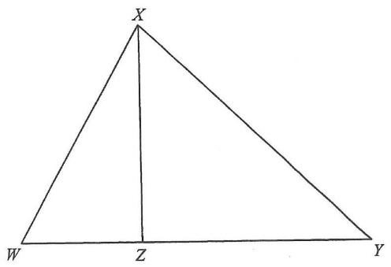

Check the triangle $XZW$ with sides $XZ=60$, $WZ=25$, $WX=65$:
$$XZ^2+WZ^2=60^2+25^2=3600+625=4225=65^2=WX^2$$By the converse of Pythagoras' Theorem,
$$\angle XZW = 90^\circ$$So $XZ \perp WY$ and $\angle XZY = 90^\circ$ as well.
Consider $\triangle WYX$ and $\triangle XYZ$:
$$\angle XYW = \angle ZYX \quad (\text{common angle})$$ $$\frac{WY}{XY}=\frac{XY}{YZ} \quad \text{?}$$Better: compare $\triangle WXY$ and $\triangle XZY$ — both have a $90^\circ$ angle at $Z$ / right angle.
Use the shared angle at $Y$: $\triangle WXY \sim \triangle XZY$ (AA).
From $\triangle WXY \sim \triangle XZY$, matching sides:
$$\frac{XY}{YZ}=\frac{WX}{XZ}=\frac{65}{60}=\frac{13}{12}$$Hence
$$YZ=\frac{12}{13}\,XY$$In right-angled triangle $XZY$ ($\angle XZY = 90^\circ$):
$$XZ^2+YZ^2=XY^2$$ $$60^2+\left(\tfrac{12}{13}XY\right)^2=XY^2$$ $$3600=XY^2-\frac{144}{169}XY^2=\frac{25}{169}XY^2$$ $$XY^2=\frac{3600\times169}{25}=144\times169$$ $$XY=\sqrt{144\times169}=12\times13=156$$$XY = 156\text{ cm}$, which matches option C.
Question. In the figure, \(Z\) lies on \(WY\) of \(\triangle WXY\) such that \(XZ\perp WY\). If \(WX=130\text{ cm}\), \(XZ=120\text{ cm}\) and \(WZ=50\text{ cm}\), find \(XY\).